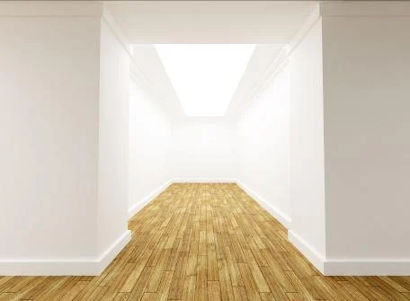
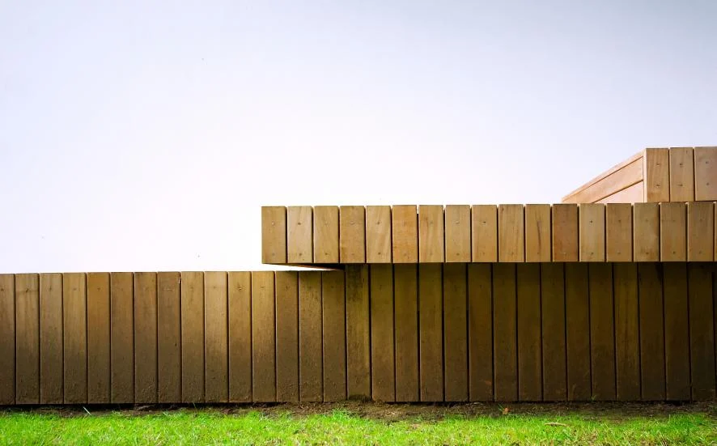

Cerca Woodtech · M. Cerca Ramos
Madeira.
Dentro e fora.
Pavimentos de madeira maciça para interior e exterior. Conheça as espécies, os modelos e as opções de fixação publicados pela Cerca.
Explorar materiais
Desde 1983Madeira e derivados
Imagem ilustrativa do website oficial. Não é apresentada como obra executada pela empresa.
Qual é o espaço?
Dois percursos.
A matéria em comum.
Fotografias ilustrativas publicadas no website da marca; autoria das aplicações não identificada.
Uma forma de trabalhar
Conhecimento
da matéria.
Atenção à execução.
Desde 1983, a M. Cerca Ramos desenvolve técnicas de trabalho da madeira e dos seus derivados.
Conhecer a empresaPlaneamento
Conhecer a utilização pretendida e enquadrar a solução.
Escolha
Explorar espécies, modelos e tipos de fixação com a equipa.
Execução
Rigor na gestão, no planeamento e na execução, conforme a apresentação da empresa.